## load the data (not provided here, this will give an error) ##
with open('data_RydbergExpL13 (1).pkl', 'rb') as f:
data = pickle.load(f)
snapshots = data['dataset']
all_Rb = jnp.array(data['all_Rb'])
all_delta = jnp.array(data['all_delta'])
L = 13
N = L*LRydberg atoms
This notebook presents how to use QDisc to reproduce the results on the Rydberg atom dataset.
dataset and training
The data are experimental snapshots obtained from a programmable Rydberg atom array. For more information, see the experimental paper:
https://www.nature.com/articles/s41586-021-03582-4
## cast them into a QDisc Dataset object ##
from qdisc.dataset.core import Dataset
dataset = Dataset(data=snapshots, thetas=[all_Rb, all_delta], data_type='discrete', local_dimension=2, local_states=jnp.array([0,1]))## create Transformer encoder and decoder ##
from qdisc.nn.core import Transformer_encoder
from qdisc.nn.core import Transformer_decoder
from qdisc.vae.core import VAEmodel
encoder = Transformer_encoder(latent_dim=5, d_model=8, num_heads=4, num_layers=3, data_type='discrete')
decoder = Transformer_decoder(d_model=8, num_heads=4, num_layers=3, data_type='discrete')
myvae = VAEmodel(encoder=encoder, decoder=decoder)## training and representation ##
from qdisc.vae.core import VAETrainer
myvaetrainer = VAETrainer(model=myvae, dataset=dataset)
key = jax.random.PRNGKey(6473)
num_epochs = 200
myvaetrainer.train(num_epochs=num_epochs, batch_size=3000, beta=0.45, gamma=0., key=key, printing_rate=10, re_shuffle=False)Start training...
epoch=0 step=0 loss=119.569095476654 recon=117.79883895165419
logvar=[ 1.07415317 0.77997939 0.72378845 -0.93821395 -0.10032408]
epoch=10 step=0 loss=57.38552010440751 recon=56.24097025543754
logvar=[-0.07107329 -0.16698306 -0.34394546 -4.30383545 -0.06234075]
epoch=20 step=0 loss=56.43766805834163 recon=55.290590279764864
logvar=[-5.25762906e-02 -2.62134787e-02 -9.96280070e-02 -4.49870754e+00
-2.65689430e-03]
epoch=30 step=0 loss=55.400550071167956 recon=54.15427316108366
logvar=[-0.24448012 -0.03299001 -0.01156073 -4.82013867 -0.0088556 ]
epoch=40 step=0 loss=54.83681362387403 recon=53.43010166759967
logvar=[-1.07542669 -0.01479255 -0.00726525 -4.86872305 0.01455821]
epoch=50 step=0 loss=54.53603219957166 recon=53.091557566642486
logvar=[-1.23756027e+00 -1.23709528e-02 -5.47091283e-03 -4.94531256e+00
3.28441727e-03]
epoch=60 step=0 loss=54.43254836895113 recon=52.95765146657946
logvar=[-1.31491583e+00 7.30443888e-03 -1.43214228e-03 -5.12444969e+00
-1.06741663e-02]
epoch=70 step=0 loss=54.1974911817511 recon=52.71919527568474
logvar=[-1.32034127e+00 -2.37230897e-02 1.86053524e-02 -5.13348633e+00
-1.70989903e-03]
epoch=80 step=0 loss=54.12660673668517 recon=52.647385917253445
logvar=[-1.3428631 0.02448355 -0.01474814 -4.96093612 -0.00953531]
epoch=90 step=0 loss=53.92428452520894 recon=52.40086608436129
logvar=[-1.34732496e+00 -6.91766618e-03 3.85537124e-03 -5.43389109e+00
1.05323362e-02]
epoch=100 step=0 loss=53.81375978950114 recon=52.284231036530535
logvar=[-1.24221828e+00 1.59933671e-03 1.10860366e-02 -5.40422867e+00
4.23926713e-03]
epoch=110 step=0 loss=53.947662847043595 recon=52.389166815528945
logvar=[-1.22268732 -0.01024584 0.01105267 -5.60247201 0.00754143]
epoch=120 step=0 loss=53.65327323397351 recon=52.11970498272226
logvar=[-1.14891570e+00 1.44860368e-03 -7.84471019e-03 -5.52474337e+00
-3.39629913e-03]
epoch=130 step=0 loss=53.58965383275648 recon=52.03493555562553
logvar=[-1.21718777e+00 -1.95895586e-03 1.06011300e-02 -5.49717389e+00
-1.73662012e-04]
epoch=140 step=0 loss=53.741270003328054 recon=52.17246465086842
logvar=[-1.20641303e+00 2.43419631e-03 -9.57970176e-03 -5.35377156e+00
2.04272250e-02]
epoch=150 step=0 loss=53.504663767647344 recon=51.920817517337696
logvar=[-1.13939071e+00 -4.74558356e-02 -5.17827363e-03 -5.59386329e+00
-1.79535286e-02]
epoch=160 step=0 loss=53.42087330008696 recon=51.82503184617968
logvar=[-1.20954355 -0.04384308 -0.06335316 -5.62403719 -0.01117719]
epoch=170 step=0 loss=53.35845947168567 recon=51.74085816470033
logvar=[-1.22017346 -0.04838106 -0.15391571 -5.70929859 -0.0138193 ]
epoch=180 step=0 loss=53.38771218351293 recon=51.759155963089704
logvar=[-1.18558398 -0.07025403 -0.13406768 -5.76573897 -0.01678924]
epoch=190 step=0 loss=53.30599297063178 recon=51.645958555152056
logvar=[-1.25971673 -0.01837498 -0.14288555 -5.67526412 -0.03959246]
Training finished.data = myvaetrainer.get_data()myvaetrainer.plot_training(num_epochs = num_epochs)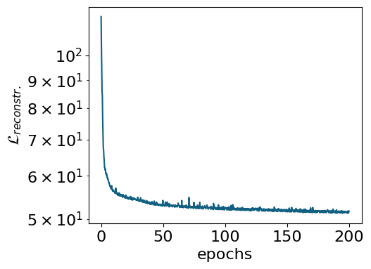
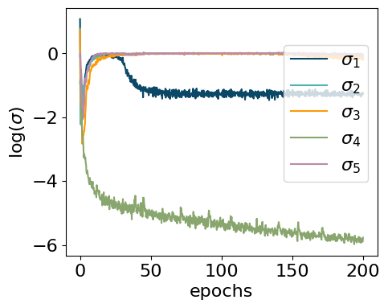
latvar = myvaetrainer.compute_repr2d(theta_pair=(0,1), return_latvar = True)
myvaetrainer.plot_repr2d(theta_pair=(0,1),subplot=False)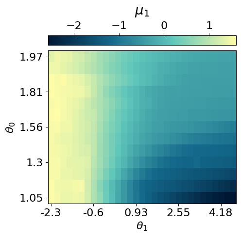
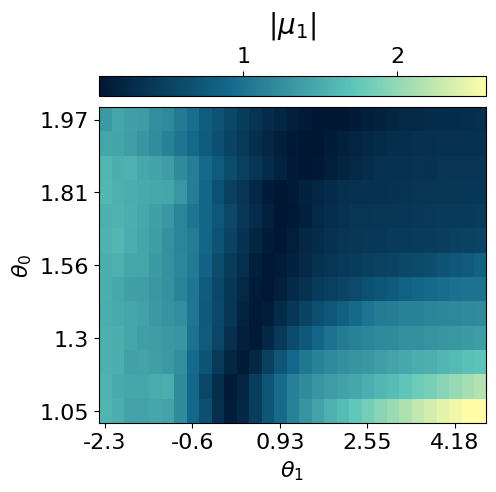
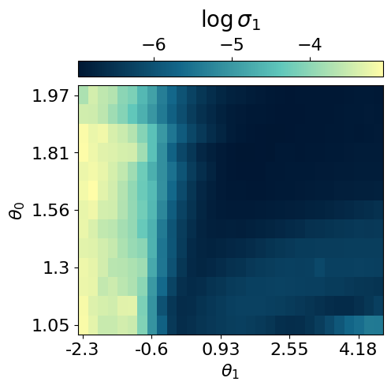
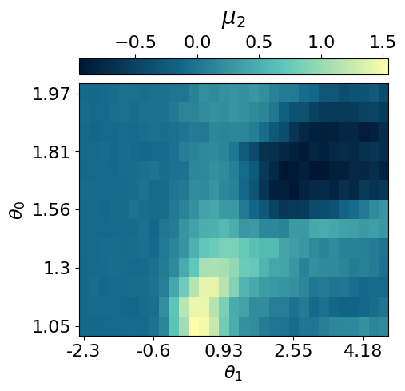
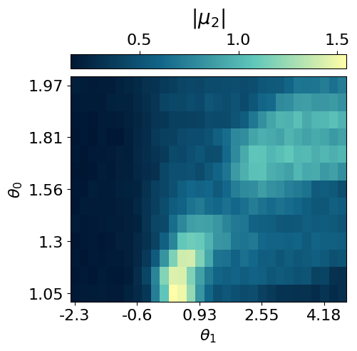
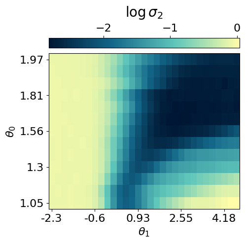
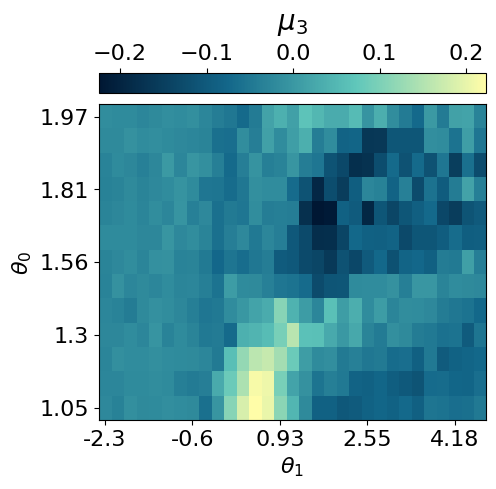
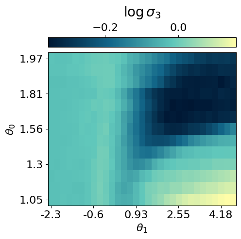
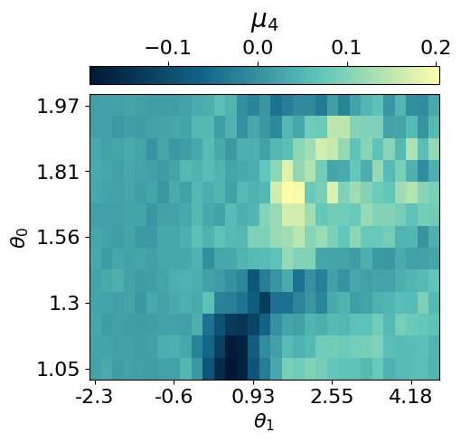
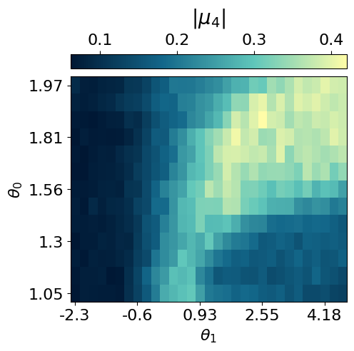
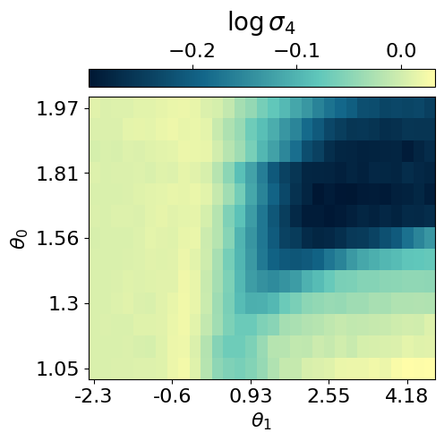
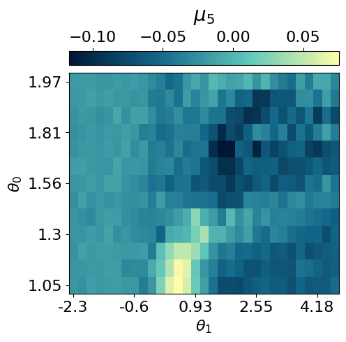
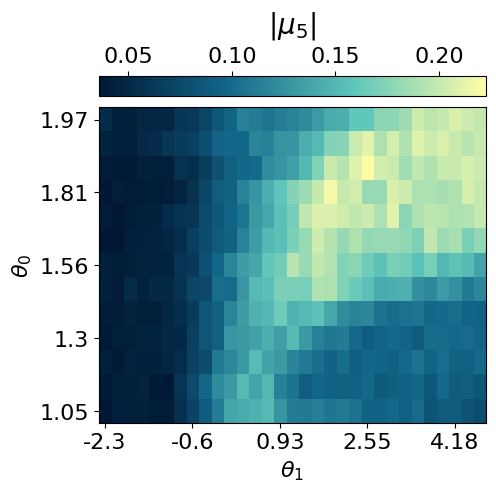
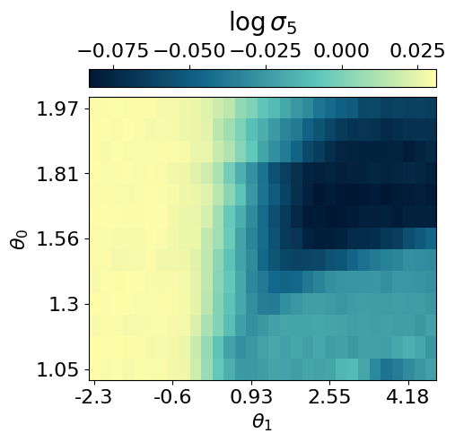
data.keys()dict_keys(['params', 'history_loss', 'history_recon', 'history_logvar', 'latvar'])## saving the data ##
#data = myvaetrainer.get_data()
with open('RydbergExpL13_data_cpVAE2_QDisc.pkl', 'wb') as f:
pickle.dump(data, f)## example how to load the data ##
with open('RydbergExpL13_data_cpVAE2_QDisc.pkl', 'rb') as f:
data = pickle.load(f)
VAE_params = data['params']
myvaetrainer = VAETrainer(model=myvae, dataset=dataset)
key = jax.random.PRNGKey(0)
myvaetrainer.init_state(key, dataset.data[0,0])
myvaetrainer.state = myvaetrainer.state.replace(params=VAE_params)Exploring conditional probabilities with the decoder
In this section, we demonstrate how the decoder of the cpVAE can be used to gain further insight into the ordering of each phase by examining the conditional probabilities.
The procedure is as follows: 1. Specify the values of the latent variables corresponding to a region of interest in the latent space. 2. Identify the dataset samples associated with these latent values. 3. Input these samples into the decoder to compute the conditional probabilities of the spin configurations.
latvar = myvaetrainer.latvar
latvar.keys()dict_keys(['id_lat', 'theta_pair', 'mu0', 'mu0_abs', 'logvar0', 'mu1', 'mu1_abs', 'logvar1', 'mu2', 'mu2_abs', 'logvar2', 'mu3', 'mu3_abs', 'logvar3', 'mu4', 'mu4_abs', 'logvar4'])## a snake ordering is used, need it to map back to 2d for plotting ##
snake_idx = jnp.zeros((N,2))
for i in range(N):
#position of each atoms using the snake numbering
yp = i//L
xp = (yp%2==0)*(i%L) + (yp%2==1)*(L-1-i%L)
snake_idx = snake_idx.at[i].set(jnp.array([yp, xp]))
snake_idx = snake_idx.astype(jnp.int64)
def plot_cp(p_add_cluster):
plt.rcParams['font.size'] = 16
plt.figure(figsize=(5,5),dpi=75)
p = jnp.mean(p_add_cluster,axis=0)[:,1]
p2D = jnp.zeros((L,L))
p2D = p2D.at[snake_idx[:,0], snake_idx[:,1]].set(p)
plt.imshow(p2D, cmap=cmap_blue)
cbar = plt.colorbar(orientation="horizontal", pad=0.03, location="top")
cbar.set_label('conditional probabilities')
plt.xlabel(r'$x$ position on the lattice')
plt.ylabel(r'$y$ position on the lattice')
x_tick_positions = [i for i in range(0,13,2)]
x_tick_labels = [str(i) for i in range(1,14,2)]
plt.xticks(x_tick_positions, x_tick_labels)
y_tick_positions = x_tick_positions
y_tick_labels = [str(14-i) for i in range(1,14,2)]
plt.yticks(y_tick_positions, y_tick_labels)
plt.show()
latvar = myvaetrainer.latvar
mu1 = latvar['mu1']
mu0 = latvar['mu0']
data_cond_prob = {}## Additional cluter ##
mu1 = latvar['mu1']
idx_add_cluster = jnp.argwhere(mu1>1.25)
N = dataset.data.shape[-1]
data_add_cluster = dataset.data[idx_add_cluster[:,0],idx_add_cluster[:,1],:,:].reshape(-1,N)[:2000]
m = jnp.zeros((13,31))
for i in idx_add_cluster:
m = m.at[i[0],i[1]].add(1)
plt.rcParams['font.size'] = 16
plt.figure(figsize=(5,4),dpi=75)
plt.imshow(jnp.flipud(m), aspect='auto')
plt.show()
input_samples = dataset.data[idx_add_cluster[:,0],idx_add_cluster[:,1],:,:].reshape(-1,N)
key = jax.random.PRNGKey(0)
cp = myvaetrainer.get_cp(input_samples)
p_add_cluster = jnp.exp(cp)
plot_cp(p_add_cluster)
data_cond_prob['idx_add_cluster'] = idx_add_cluster
data_cond_prob['cp_add_cluster'] = cp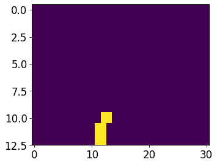
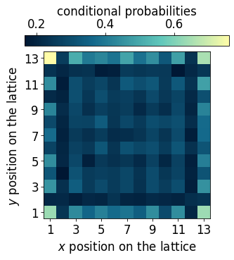
## Striated phase ##
id_somewhere_else = jnp.argwhere(mu1<-0.95)
data_somewhere_else= dataset.data[id_somewhere_else[:,0],id_somewhere_else[:,1],:,:].reshape(-1,N)[:2000]
m = jnp.zeros((13,31))
for i in id_somewhere_else:
m = m.at[i[0],i[1]].add(1)
plt.rcParams['font.size'] = 16
plt.figure(figsize=(5,4),dpi=75)
plt.imshow(jnp.flipud(m), aspect='auto')
plt.show()
cp = myvaetrainer.get_cp(data_somewhere_else)
p_somewhere_else = jnp.exp(cp)
plot_cp(p_somewhere_else)
idx_striated = jnp.median(jnp.array(id_somewhere_else), axis=0)
data_cond_prob['idx_striated'] = idx_striated
data_cond_prob['cp_striated'] = cp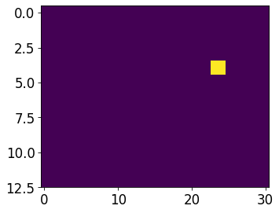
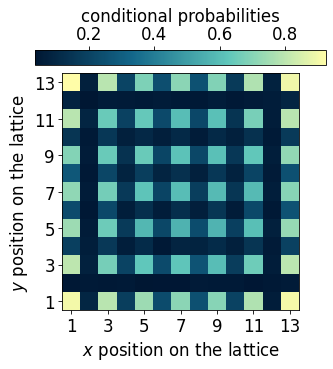
## Checkerboard phase ##
mu0 = latvar['mu0']
id_somewhere_else = jnp.argwhere(((mu0<-1.45)*1 + (mu0>-1.55)*1)==2)
#just take the ones starting with 1 to not have degeneracies effect
data_somewhere_else = dataset.data[id_somewhere_else[:,0],id_somewhere_else[:,1],:,:].reshape(-1,N)[:2000]#[jnp.argwhere(data_somewhere_else[:,0]==1)[:,0]]
#data_somewhere_else = data_somewhere_else[jnp.argwhere(data_somewhere_else[:,0]==1)[:,0]]
m = jnp.zeros((13,31))
for i in id_somewhere_else:
m = m.at[i[0],i[1]].add(1)
plt.rcParams['font.size'] = 16
plt.figure(figsize=(5,4),dpi=75)
plt.imshow(jnp.flipud(m), aspect='auto')
cbar = plt.colorbar(orientation="horizontal", pad=0.03, location="top")
cbar.set_label(r'class', fontsize=20, labelpad=10)
plt.show()
cp = myvaetrainer.get_cp(data_somewhere_else)
p_somewhere_else = jnp.exp(cp)
plot_cp(p_somewhere_else)
idx_check = jnp.median(jnp.array(id_somewhere_else), axis=0)
data_cond_prob['idx_check'] = idx_check
data_cond_prob['cp_check'] = cp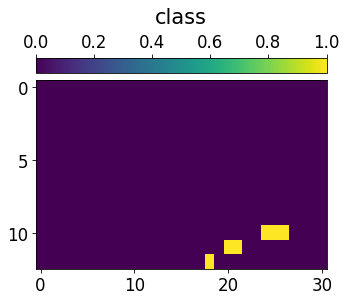
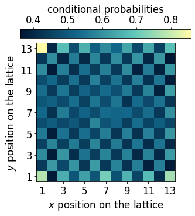
## Fully loaded lattice ##
id_somewhere_else = jnp.argwhere(mu0<-2.2)
data_somewhere_else= dataset.data[id_somewhere_else[:,0],id_somewhere_else[:,1],:,:].reshape(-1,N)[:2000]
m = jnp.zeros((13,31))
for i in id_somewhere_else:
m = m.at[i[0],i[1]].add(1)
plt.rcParams['font.size'] = 16
plt.figure(figsize=(5,4),dpi=75)
plt.imshow(jnp.flipud(m), aspect='auto')
plt.show()
cp = myvaetrainer.get_cp(data_somewhere_else)
p_somewhere_else = jnp.exp(cp)
p = jnp.mean(p_somewhere_else,axis=0)[:,1]
plot_cp(p_somewhere_else)
idx_full = jnp.median(jnp.array(id_somewhere_else), axis=0)
data_cond_prob['idx_full'] = idx_full
data_cond_prob['cp_full'] = cp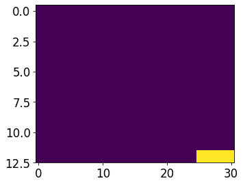
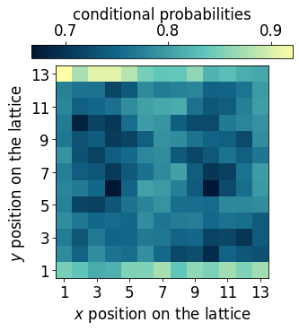
## Empty lattice ##
id_somewhere_else = jnp.argwhere(mu0>1.2)
data_somewhere_else= dataset.data[id_somewhere_else[:,0],id_somewhere_else[:,1],:,:].reshape(-1,N)[:2000,:]
m = jnp.zeros((13,31))
for i in id_somewhere_else:
m = m.at[i[0],i[1]].add(1)
plt.rcParams['font.size'] = 16
plt.figure(figsize=(5,4),dpi=75)
plt.imshow(jnp.flipud(m), aspect='auto')
plt.show()
cp = myvaetrainer.get_cp(data_somewhere_else)
p_somewhere_else = jnp.exp(cp)
p = jnp.mean(p_somewhere_else,axis=0)[:,1]
plot_cp(p_somewhere_else)
idx_empty = jnp.median(jnp.array(id_somewhere_else), axis=0)
data_cond_prob['idx_empty'] = idx_empty
data_cond_prob['cp_empty'] = cp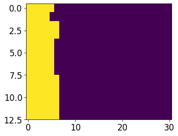
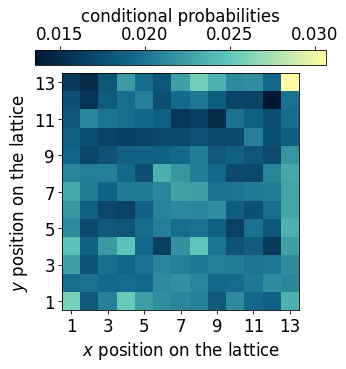
## Edge ordered phase ##
id_somewhere_else = jnp.argwhere(((mu1<1)*1 + (mu0>-.5)*1 + (mu0<0)*1 + (mu1>0.4)*1)==4)
data_somewhere_else= dataset.data[id_somewhere_else[:,0],id_somewhere_else[:,1],:,:].reshape(-1,N)[:2000,:]
m = jnp.zeros((13,31))
for i in id_somewhere_else:
m = m.at[i[0],i[1]].add(1)
plt.rcParams['font.size'] = 16
plt.figure(figsize=(5,4),dpi=75)
plt.imshow(jnp.flipud(m), aspect='auto')
plt.show()
cp = myvaetrainer.get_cp(data_somewhere_else)
p_somewhere_else = jnp.exp(cp)
p = jnp.mean(p_somewhere_else,axis=0)[:,1]
plot_cp(p_somewhere_else)
idx_edge = jnp.median(jnp.array(id_somewhere_else), axis=0)
data_cond_prob['idx_edge'] = idx_edge
data_cond_prob['cp_edge'] = cp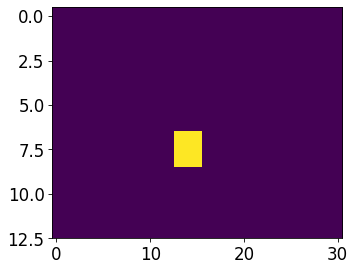
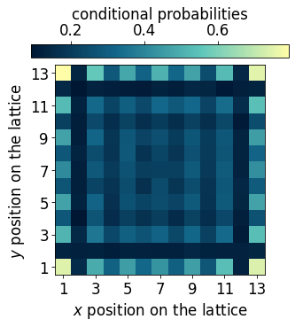
data['latvar'] = latvar
data['data_cond_prob'] = data_cond_prob
with open('RydbergExpL13_data_cpVAE2_QDisc.pkl', 'wb') as f:
pickle.dump(data, f)Symbolic regression
In this section, we use QDisc.SR.SymbolicRegression with the 'genetic' search space and the SR1 objective to find a symbolic function that characterizes the additional cluster.
#import pysr
import numpy as np
from pysr import PySRRegressor #this take around 7min
import sympy as sp
import pickle
from jax import numpy as jnp
import jax
from matplotlib import pyplot as plt[juliapkg] Found dependencies: /usr/local/lib/python3.12/dist-packages/juliapkg/juliapkg.json
[juliapkg] Found dependencies: /usr/local/lib/python3.12/dist-packages/juliacall/juliapkg.json
[juliapkg] Found dependencies: /usr/local/lib/python3.12/dist-packages/pysr/juliapkg.json
[juliapkg] Locating Julia 1.10.3 - 1.11
[juliapkg] Using Julia 1.11.5 at /usr/local/bin/julia
[juliapkg] Using Julia project at /root/.julia/environments/pyjuliapkg
[juliapkg] Writing Project.toml:
| [deps]
| PythonCall = "6099a3de-0909-46bc-b1f4-468b9a2dfc0d"
| OpenSSL_jll = "458c3c95-2e84-50aa-8efc-19380b2a3a95"
| SymbolicRegression = "8254be44-1295-4e6a-a16d-46603ac705cb"
| Serialization = "9e88b42a-f829-5b0c-bbe9-9e923198166b"
|
| [compat]
| PythonCall = "=0.9.26"
| OpenSSL_jll = "~3.0"
| SymbolicRegression = "~1.11"
| Serialization = "^1"
[juliapkg] Installing packages:
| import Pkg
| Pkg.Registry.update()
| Pkg.add([
| Pkg.PackageSpec(name="PythonCall", uuid="6099a3de-0909-46bc-b1f4-468b9a2dfc0d"),
| Pkg.PackageSpec(name="OpenSSL_jll", uuid="458c3c95-2e84-50aa-8efc-19380b2a3a95"),
| Pkg.PackageSpec(name="SymbolicRegression", uuid="8254be44-1295-4e6a-a16d-46603ac705cb"),
| Pkg.PackageSpec(name="Serialization", uuid="9e88b42a-f829-5b0c-bbe9-9e923198166b"),
| ])
| Pkg.resolve()
| Pkg.precompile()
Detected IPython. Loading juliacall extension. See https://juliapy.github.io/PythonCall.jl/stable/compat/#IPythonfrom matplotlib.colors import ListedColormap
from matplotlib.colors import LinearSegmentedColormap
import matplotlib.patches as patches
custom_palette = ['#001733', '#13678A', '#60C7BB', '#FFFDA8']
cmap_blue = LinearSegmentedColormap.from_list("custom_cmap", custom_palette)
custom_palette = ['#221226','#633D55','#A3648B','#F7FAFF']
cmap_purple = LinearSegmentedColormap.from_list("custom_cmap", custom_palette)
custom_palette = ['#0D090D','#365925','#DAF2B6']
cmap_green3 = LinearSegmentedColormap.from_list("custom_cmap", custom_palette)id_add_cluster = jnp.argwhere(mu1>1.2)
id_add_clusterArray([[ 0, 11],
[ 0, 12],
[ 0, 13],
[ 1, 11],
[ 1, 12],
[ 2, 12],
[ 2, 13]], dtype=int64)with open('data_RydbergExpL13.pkl', 'rb') as f:
data = pickle.load(f)
snapshots = data['dataset']
all_Rb = jnp.array(data['all_Rb'])
all_delta = jnp.array(data['all_delta'])
L = 13
N = L*L
idx_add_cluster = jnp.array([[ 0, 11],
[ 0, 12],
[ 0, 13],
[ 1, 11],
[ 1, 12],
[ 2, 12],
[ 2, 13]])## specify the indexe of the data labelled as outide and visualize ##
#id_add_cluster = jnp.argwhere(mu1<-1.2)
classes = 3*jnp.ones((13,31))
for i in idx_add_cluster:
classes = classes.at[i[0],i[1]].set(1)
classes = classes.at[7:,12:17].set(2)
plt.rcParams['font.size'] = 16
plt.figure(figsize=(5,4),dpi=100)
cmap_2bins = ListedColormap([cmap_blue(0.75), cmap_purple(0.65), cmap_blue(0.)])
im = plt.imshow(jnp.flipud(classes), aspect='auto', cmap=cmap_2bins)
cbar = plt.colorbar(im, orientation="horizontal", pad=0.03, location="top", ticks=[1.33, 2, 2.66])
cbar.set_ticklabels(['0', '1', 'Not in'])
cbar.set_label(r'Dataset SR1')
plt.xlabel(r'$\Delta/\Omega$')
plt.ylabel(r'$R_b/a$')
x_tick_positions = [1, 10, 19, 27] # Positions for the ticks
x_tick_labels = ['-2', '0', '2', '4'] # Labels for the ticks
plt.xticks(x_tick_positions, x_tick_labels)
y_tick_positions = [0,6,12] # Positions for the ticks
y_tick_labels = ['2.0', '1.5', '1.0'] # Labels for the ticks
plt.yticks(y_tick_positions, y_tick_labels)
plt.show()
data = snapshots
all_corners = [[0,1,25,24], [12,13,11,14], [156,155,157,154], [168,167,143,144]]
data_corners = jnp.concatenate([snapshots[..., corners] for corners in all_corners], axis=2)
dataset_corners = Dataset(data=data_corners, thetas=[all_Rb, all_delta], data_type='discrete', local_dimension=2, local_states=jnp.array([0,1]))
cluster_idx_in = jnp.argwhere(classes==1)
cluster_idx_out = jnp.argwhere(classes==2)
mySR = SymbolicRegression(dataset = dataset_corners,
cluster_idx_in = cluster_idx_in,
cluster_idx_out = cluster_idx_out,
objective='SR1',
search_space = "2_body_correlator" )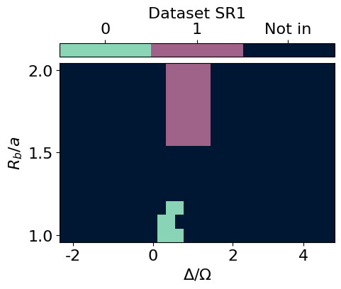
## restrict the data to the corners of the lattice ##
from qdisc.sr.core import SymbolicRegression
data = snapshots
all_corners = [[0,1,25,24], [12,13,11,14], [156,155,157,154], [168,167,143,144]]
data_corners = jnp.concatenate([snapshots[..., corners] for corners in all_corners], axis=2)
dataset_corners = Dataset(data=data_corners, thetas=[all_Rb, all_delta], data_type='discrete', local_dimension=2, local_states=jnp.array([0,1]))
cluster_idx_in = jnp.argwhere(classes==1)
cluster_idx_out = jnp.argwhere(classes==2)
mySR = SymbolicRegression(dataset = dataset_corners,
cluster_idx_in = cluster_idx_in,
cluster_idx_out = cluster_idx_out,
objective='SR1',
search_space = "genetic",
shift_data = False)PySRRegressor imported## search ##
all_perf, all_eqs, all_terms = mySR.train(
key = jax.random.PRNGKey(645),
dataset_size = 5000,
random_state = 123, # seed for reproductibility
niterations = 20, # Number of iterations to search
binary_operators = ["+", "*", "-"], # Allowed binary operations
elementwise_loss = "loss(x,y) = -y*log(1/(1+exp(-x)))-(1-y)*log(1-1/(1+exp(-x)))", # sigmoid loss for SR1
maxsize = 20, # max complexity of the equations
progress = True, # Show progress during training
extra_sympy_mappings = {"C": "C"}, # Allow PySR to use constants
batching = True, #batching, usually big dataset
batch_size = 1000,
turbo = True,
deterministic = True, #for reproductibility
parallelism = 'serial')/usr/local/lib/python3.12/dist-packages/pysr/sr.py:2811: UserWarning: Note: it looks like you are running in Jupyter. The progress bar will be turned off.
warnings.warn(
Compiling Julia backend...
INFO:pysr.sr:Compiling Julia backend...
Resolving package versions...
Installed ThreadingUtilities ─────────────── v0.5.5
Installed BitTwiddlingConvenienceFunctions ─ v0.1.6
Installed LayoutPointers ─────────────────── v0.1.17
Installed HostCPUFeatures ────────────────── v0.1.18
Installed ManualMemory ───────────────────── v0.1.8
Installed SIMDTypes ──────────────────────── v0.1.0
Installed VectorizationBase ──────────────── v0.21.72
Installed LoopVectorization ──────────────── v0.12.173
Installed SLEEFPirates ───────────────────── v0.6.43
Installed PolyesterWeave ─────────────────── v0.2.2
Installed UnPack ─────────────────────────── v1.0.2
Installed CloseOpenIntervals ─────────────── v0.1.13
Installed StaticArrayInterface ───────────── v1.9.0
Updating `~/.julia/environments/pyjuliapkg/Project.toml`
[bdcacae8] + LoopVectorization v0.12.173
Updating `~/.julia/environments/pyjuliapkg/Manifest.toml`
[62783981] + BitTwiddlingConvenienceFunctions v0.1.6
[2a0fbf3d] + CPUSummary v0.2.7
[fb6a15b2] + CloseOpenIntervals v0.1.13
[f70d9fcc] + CommonWorldInvalidations v1.0.0
[adafc99b] + CpuId v0.3.1
[3e5b6fbb] + HostCPUFeatures v0.1.18
[615f187c] + IfElse v0.1.1
[10f19ff3] + LayoutPointers v0.1.17
[bdcacae8] + LoopVectorization v0.12.173
[d125e4d3] + ManualMemory v0.1.8
[6fe1bfb0] + OffsetArrays v1.17.0
[1d0040c9] + PolyesterWeave v0.2.2
[94e857df] + SIMDTypes v0.1.0
[476501e8] + SLEEFPirates v0.6.43
[431bcebd] + SciMLPublic v1.0.1
[aedffcd0] + Static v1.3.1
[0d7ed370] + StaticArrayInterface v1.9.0
[8290d209] + ThreadingUtilities v0.5.5
[3a884ed6] + UnPack v1.0.2
[3d5dd08c] + VectorizationBase v0.21.72
Precompiling project...
1893.7 ms ✓ UnPack
1769.5 ms ✓ SIMDTypes
2015.6 ms ✓ ManualMemory
2236.4 ms ✓ BitTwiddlingConvenienceFunctions
3408.0 ms ✓ ThreadingUtilities
4904.3 ms ✓ StaticArrayInterface
1641.3 ms ✓ PolyesterWeave
3839.5 ms ✓ HostCPUFeatures
1658.1 ms ✓ StaticArrayInterface → StaticArrayInterfaceOffsetArraysExt
1264.0 ms ✓ CloseOpenIntervals
1058.3 ms ✓ LayoutPointers
13491.4 ms ✓ VectorizationBase
1244.7 ms ✓ SLEEFPirates
61586.3 ms ✓ LoopVectorization
2773.2 ms ✓ LoopVectorization → SpecialFunctionsExt
2875.6 ms ✓ LoopVectorization → ForwardDiffExt
4768.5 ms ✓ DynamicExpressions → DynamicExpressionsLoopVectorizationExt
17 dependencies successfully precompiled in 92 seconds. 139 already precompiled.
No Changes to `~/.julia/environments/pyjuliapkg/Project.toml`
No Changes to `~/.julia/environments/pyjuliapkg/Manifest.toml`
┌ Warning: #= /root/.julia/packages/DynamicExpressions/cYbpm/ext/DynamicExpressionsLoopVectorizationExt.jl:142 =#:
│ `LoopVectorization.check_args` on your inputs failed; running fallback `@inbounds @fastmath` loop instead.
│ Use `warn_check_args=false`, e.g. `@turbo warn_check_args=false ...`, to disable this warning.
└ @ DynamicExpressionsLoopVectorizationExt ~/.julia/packages/LoopVectorization/GKxH5/src/condense_loopset.jl:1166
┌ Warning: #= /root/.julia/packages/DynamicExpressions/cYbpm/ext/DynamicExpressionsLoopVectorizationExt.jl:152 =#:
│ `LoopVectorization.check_args` on your inputs failed; running fallback `@inbounds @fastmath` loop instead.
│ Use `warn_check_args=false`, e.g. `@turbo warn_check_args=false ...`, to disable this warning.
└ @ DynamicExpressionsLoopVectorizationExt ~/.julia/packages/LoopVectorization/GKxH5/src/condense_loopset.jl:1166
┌ Warning: #= /root/.julia/packages/DynamicExpressions/cYbpm/ext/DynamicExpressionsLoopVectorizationExt.jl:187 =#:
│ `LoopVectorization.check_args` on your inputs failed; running fallback `@inbounds @fastmath` loop instead.
│ Use `warn_check_args=false`, e.g. `@turbo warn_check_args=false ...`, to disable this warning.
└ @ DynamicExpressionsLoopVectorizationExt ~/.julia/packages/LoopVectorization/GKxH5/src/condense_loopset.jl:1166
┌ Warning: #= /root/.julia/packages/DynamicExpressions/cYbpm/ext/DynamicExpressionsLoopVectorizationExt.jl:161 =#:
│ `LoopVectorization.check_args` on your inputs failed; running fallback `@inbounds @fastmath` loop instead.
│ Use `warn_check_args=false`, e.g. `@turbo warn_check_args=false ...`, to disable this warning.
└ @ DynamicExpressionsLoopVectorizationExt ~/.julia/packages/LoopVectorization/GKxH5/src/condense_loopset.jl:1166
┌ Warning: #= /root/.julia/packages/DynamicExpressions/cYbpm/ext/DynamicExpressionsLoopVectorizationExt.jl:212 =#:
│ `LoopVectorization.check_args` on your inputs failed; running fallback `@inbounds @fastmath` loop instead.
│ Use `warn_check_args=false`, e.g. `@turbo warn_check_args=false ...`, to disable this warning.
└ @ DynamicExpressionsLoopVectorizationExt ~/.julia/packages/LoopVectorization/GKxH5/src/condense_loopset.jl:1166
[ Info: Started!
Expressions evaluated per second: 9.500e+02
Progress: 46 / 620 total iterations (7.419%)
════════════════════════════════════════════════════════════════════════════════════════════════════
───────────────────────────────────────────────────────────────────────────────────────────────────
Complexity Loss Score Equation
1 6.940e-01 0.000e+00 y = -0.081661
3 6.346e-01 4.473e-02 y = x₁ + x₃
5 6.208e-01 1.102e-02 y = (x₃ * 2.1711) + x₁
7 6.018e-01 1.549e-02 y = (x₃ + (x₁ + -0.42624)) + x₃
9 5.773e-01 2.080e-02 y = x₁ + (((x₃ - 0.21415) * 3.0877) + x₂)
11 5.772e-01 1.125e-04 y = (((x₃ + (x₁ + x₃)) + -0.60713) + x₂) * 1.4292
13 5.743e-01 2.526e-03 y = (x₃ * x₀) + (x₂ + ((-0.70466 + (x₃ + x₁)) + x₃))
15 5.731e-01 1.021e-03 y = ((x₀ * (x₃ * 1.3817)) + (((x₂ + -0.70466) + x₃) + x₁))...
+ x₃
17 5.726e-01 4.610e-04 y = ((x₀ * (x₃ * 0.91296)) + ((x₂ + -0.68221) + ((x₃ + x₁)...
+ x₃))) * 1.2419
19 5.710e-01 1.364e-03 y = (((x₃ + (x₁ - ((-0.0098262 - x₂) * (x₁ + 0.75249)))) -...
-0.0073776) - (x₃ * -1.9871)) - 0.75249
───────────────────────────────────────────────────────────────────────────────────────────────────
════════════════════════════════════════════════════════════════════════════════════════════════════
Press 'q' and then <enter> to stop execution early.
Expressions evaluated per second: 9.130e+02
Progress: 84 / 620 total iterations (13.548%)
════════════════════════════════════════════════════════════════════════════════════════════════════
───────────────────────────────────────────────────────────────────────────────────────────────────
Complexity Loss Score Equation
1 6.932e-01 0.000e+00 y = -0.012652
3 6.346e-01 4.414e-02 y = x₁ + x₃
5 6.208e-01 1.102e-02 y = (x₃ * 2.1711) + x₁
7 6.016e-01 1.567e-02 y = x₁ + ((x₃ - 0.21415) * 3.0877)
9 5.773e-01 2.061e-02 y = x₁ + (((x₃ - 0.21415) * 3.0877) + x₂)
11 5.772e-01 1.125e-04 y = (((x₃ + (x₁ + x₃)) + -0.60713) + x₂) * 1.4292
13 5.739e-01 2.856e-03 y = (x₃ * x₀) + (((x₂ + (x₃ + x₁)) + -0.64617) + x₃)
15 5.731e-01 6.903e-04 y = ((x₀ * (x₃ * 1.3817)) + (((x₂ + -0.70466) + x₃) + x₁))...
+ x₃
17 5.726e-01 4.610e-04 y = ((x₀ * (x₃ * 0.91296)) + ((x₂ + -0.68221) + ((x₃ + x₁)...
+ x₃))) * 1.2419
19 5.710e-01 1.364e-03 y = (((x₃ + (x₁ - ((-0.0098262 - x₂) * (x₁ + 0.75249)))) -...
-0.0073776) - (x₃ * -1.9871)) - 0.75249
───────────────────────────────────────────────────────────────────────────────────────────────────
════════════════════════════════════════════════════════════════════════════════════════════════════
Press 'q' and then <enter> to stop execution early.
Expressions evaluated per second: 9.440e+02
Progress: 125 / 620 total iterations (20.161%)
════════════════════════════════════════════════════════════════════════════════════════════════════
───────────────────────────────────────────────────────────────────────────────────────────────────
Complexity Loss Score Equation
1 6.931e-01 0.000e+00 y = 0
3 6.346e-01 4.413e-02 y = x₁ + x₃
5 6.208e-01 1.102e-02 y = (x₃ * 2.1711) + x₁
7 6.016e-01 1.567e-02 y = x₁ + ((x₃ - 0.21415) * 3.0877)
9 5.773e-01 2.061e-02 y = x₁ + (((x₃ - 0.21415) * 3.0877) + x₂)
11 5.772e-01 1.125e-04 y = (((x₃ + (x₁ + x₃)) + -0.60713) + x₂) * 1.4292
13 5.730e-01 3.664e-03 y = (((x₃ + x₃) * (x₀ + x₃)) + x₁) + (x₂ + -0.67966)
15 5.701e-01 2.494e-03 y = (((x₃ + x₃) + x₃) + ((x₁ * x₂) + x₁)) + (x₂ + -0.76112...
)
17 5.691e-01 8.939e-04 y = x₃ + (x₃ + (x₃ + (((x₂ + (x₂ + x₁)) * x₁) + (x₂ + -0.5...
7925))))
───────────────────────────────────────────────────────────────────────────────────────────────────
════════════════════════════════════════════════════════════════════════════════════════════════════
Press 'q' and then <enter> to stop execution early.
Expressions evaluated per second: 9.510e+02
Progress: 163 / 620 total iterations (26.290%)
════════════════════════════════════════════════════════════════════════════════════════════════════
───────────────────────────────────────────────────────────────────────────────────────────────────
Complexity Loss Score Equation
1 6.931e-01 0.000e+00 y = 0
3 6.346e-01 4.413e-02 y = x₁ + x₃
5 6.208e-01 1.102e-02 y = (x₃ * 2.1711) + x₁
7 5.980e-01 1.866e-02 y = ((x₃ - 0.16037) * 2.7394) + x₁
9 5.773e-01 1.762e-02 y = x₁ + (((x₃ - 0.21415) * 3.0877) + x₂)
11 5.755e-01 1.549e-03 y = ((x₃ * (x₀ + 1.7235)) + x₁) + (x₂ + -0.67966)
13 5.730e-01 2.228e-03 y = (((x₃ + x₃) * (x₀ + x₃)) + x₁) + (x₂ + -0.67966)
15 5.701e-01 2.494e-03 y = (((x₃ + x₃) + x₃) + ((x₁ * x₂) + x₁)) + (x₂ + -0.76112...
)
17 5.691e-01 8.939e-04 y = x₃ + (x₃ + (x₃ + (((x₂ + (x₂ + x₁)) * x₁) + (x₂ + -0.5...
7925))))
───────────────────────────────────────────────────────────────────────────────────────────────────
════════════════════════════════════════════════════════════════════════════════════════════════════
Press 'q' and then <enter> to stop execution early.
Expressions evaluated per second: 9.660e+02
Progress: 205 / 620 total iterations (33.065%)
════════════════════════════════════════════════════════════════════════════════════════════════════
───────────────────────────────────────────────────────────────────────────────────────────────────
Complexity Loss Score Equation
1 6.786e-01 0.000e+00 y = x₂
3 6.346e-01 3.352e-02 y = x₁ + x₃
5 6.207e-01 1.107e-02 y = (x₃ * 2.2239) + x₁
7 5.979e-01 1.867e-02 y = ((x₃ - 0.1637) * 2.7958) + x₁
9 5.773e-01 1.756e-02 y = x₁ + (((x₃ - 0.21415) * 3.0877) + x₂)
11 5.755e-01 1.549e-03 y = ((x₃ * (x₀ + 1.7235)) + x₁) + (x₂ + -0.67966)
13 5.730e-01 2.228e-03 y = (((x₃ + x₃) * (x₀ + x₃)) + x₁) + (x₂ + -0.67966)
15 5.701e-01 2.494e-03 y = (((x₃ + x₃) + x₃) + ((x₁ * x₂) + x₁)) + (x₂ + -0.76112...
)
17 5.691e-01 8.939e-04 y = x₃ + (x₃ + (x₃ + (((x₂ + (x₂ + x₁)) * x₁) + (x₂ + -0.5...
7925))))
───────────────────────────────────────────────────────────────────────────────────────────────────
════════════════════════════════════════════════════════════════════════════════════════════════════
Press 'q' and then <enter> to stop execution early.
Expressions evaluated per second: 9.800e+02
Progress: 245 / 620 total iterations (39.516%)
════════════════════════════════════════════════════════════════════════════════════════════════════
───────────────────────────────────────────────────────────────────────────────────────────────────
Complexity Loss Score Equation
1 6.786e-01 0.000e+00 y = x₂
3 6.346e-01 3.352e-02 y = x₁ + x₃
5 6.207e-01 1.108e-02 y = x₁ + (x₃ * 2.3544)
7 5.979e-01 1.867e-02 y = (x₃ * 2.8277) + (x₁ + -0.48327)
9 5.772e-01 1.762e-02 y = (x₃ * 3.0223) + ((x₁ + x₂) + -0.67966)
11 5.755e-01 1.490e-03 y = ((x₃ * (x₀ + 1.7235)) + x₁) + (x₂ + -0.67966)
13 5.722e-01 2.898e-03 y = ((x₂ + x₁) * x₂) + (x₁ + (-0.53616 + (x₃ * 2.8811)))
15 5.701e-01 1.824e-03 y = (((x₃ + x₃) + x₃) + ((x₁ * x₂) + x₁)) + (x₂ + -0.76112...
)
17 5.673e-01 2.459e-03 y = (x₃ + (((x₃ + x₃) + ((x₂ + (x₁ + x₂)) * x₁)) + x₂)) + ...
-0.69276
19 5.673e-01 4.792e-05 y = x₃ + (((((x₁ + -0.61634) + x₂) * (x₂ + x₂)) + x₁) + (x...
₃ + (x₃ - 0.71109)))
───────────────────────────────────────────────────────────────────────────────────────────────────
════════════════════════════════════════════════════════════════════════════════════════════════════
Press 'q' and then <enter> to stop execution early.
Expressions evaluated per second: 9.530e+02
Progress: 282 / 620 total iterations (45.484%)
════════════════════════════════════════════════════════════════════════════════════════════════════
───────────────────────────────────────────────────────────────────────────────────────────────────
Complexity Loss Score Equation
1 6.786e-01 0.000e+00 y = x₂
3 6.346e-01 3.352e-02 y = x₁ + x₃
5 6.207e-01 1.108e-02 y = x₁ + (x₃ * 2.3544)
7 5.979e-01 1.867e-02 y = (x₃ * 2.8277) + (x₁ + -0.48327)
9 5.772e-01 1.762e-02 y = (x₃ * 3.0223) + ((x₁ + x₂) + -0.67966)
11 5.755e-01 1.490e-03 y = ((x₃ * (x₀ + 1.7235)) + x₁) + (x₂ + -0.67966)
13 5.722e-01 2.898e-03 y = ((x₂ + x₁) * x₂) + (x₁ + (-0.53616 + (x₃ * 2.8811)))
15 5.673e-01 4.283e-03 y = (x₃ + (x₃ + x₃)) + (((x₂ + x₁) * (x₁ + x₂)) + -0.69276...
)
17 5.673e-01 4.426e-05 y = (x₃ + (x₃ + (((x₂ + (x₂ + x₁)) * x₁) + (x₃ + x₂)))) + ...
-0.72049
19 5.655e-01 1.575e-03 y = (x₀ * x₃) + (x₃ + (x₃ + ((((x₂ + (x₁ + x₂)) * x₁) + x₂...
) + -0.57925)))
───────────────────────────────────────────────────────────────────────────────────────────────────
════════════════════════════════════════════════════════════════════════════════════════════════════
Press 'q' and then <enter> to stop execution early.
Expressions evaluated per second: 1.000e+03
Progress: 334 / 620 total iterations (53.871%)
════════════════════════════════════════════════════════════════════════════════════════════════════
───────────────────────────────────────────────────────────────────────────────────────────────────
Complexity Loss Score Equation
1 6.512e-01 0.000e+00 y = x₃
3 6.346e-01 1.288e-02 y = x₁ + x₃
5 6.207e-01 1.108e-02 y = x₁ + (x₃ * 2.3544)
7 5.979e-01 1.867e-02 y = (x₃ * 2.8277) + (x₁ + -0.48327)
9 5.772e-01 1.762e-02 y = (x₃ * 3.0223) + ((x₁ + x₂) + -0.67966)
11 5.755e-01 1.490e-03 y = ((x₃ * (x₀ + 1.7235)) + x₁) + (x₂ + -0.67966)
13 5.673e-01 7.157e-03 y = (x₃ * 2.8811) + (((x₂ + x₁) * (x₁ + x₂)) + -0.72377)
15 5.637e-01 3.256e-03 y = ((x₃ * (2.3752 + x₀)) + ((x₁ + x₂) * (x₁ + x₂))) + -0....
72377
───────────────────────────────────────────────────────────────────────────────────────────────────
════════════════════════════════════════════════════════════════════════════════════════════════════
Press 'q' and then <enter> to stop execution early.
Expressions evaluated per second: 9.500e+02
Progress: 367 / 620 total iterations (59.194%)
════════════════════════════════════════════════════════════════════════════════════════════════════
───────────────────────────────────────────────────────────────────────────────────────────────────
Complexity Loss Score Equation
1 6.512e-01 0.000e+00 y = x₃
3 6.346e-01 1.288e-02 y = x₁ + x₃
5 6.207e-01 1.108e-02 y = x₁ + (x₃ * 2.3544)
7 5.979e-01 1.867e-02 y = (x₃ * 2.8277) + (x₁ + -0.48327)
9 5.772e-01 1.762e-02 y = (x₃ * 3.0223) + ((x₁ + x₂) + -0.67966)
11 5.755e-01 1.490e-03 y = ((x₃ * (x₀ + 1.7235)) + x₁) + (x₂ + -0.67966)
13 5.673e-01 7.157e-03 y = (x₃ * 2.8811) + (((x₂ + x₁) * (x₁ + x₂)) + -0.72377)
15 5.637e-01 3.256e-03 y = ((x₃ * (2.3752 + x₀)) + ((x₁ + x₂) * (x₁ + x₂))) + -0....
72377
───────────────────────────────────────────────────────────────────────────────────────────────────
════════════════════════════════════════════════════════════════════════════════════════════════════
Press 'q' and then <enter> to stop execution early.
Expressions evaluated per second: 9.520e+02
Progress: 408 / 620 total iterations (65.806%)
════════════════════════════════════════════════════════════════════════════════════════════════════
───────────────────────────────────────────────────────────────────────────────────────────────────
Complexity Loss Score Equation
1 6.512e-01 0.000e+00 y = x₃
3 6.346e-01 1.288e-02 y = x₁ + x₃
5 6.207e-01 1.108e-02 y = x₁ + (x₃ * 2.3544)
7 5.979e-01 1.867e-02 y = (x₃ * 2.8277) + (x₁ + -0.48327)
9 5.772e-01 1.762e-02 y = (x₃ * 3.0223) + ((x₁ + x₂) + -0.67966)
11 5.755e-01 1.490e-03 y = ((x₃ * (x₀ + 1.7235)) + x₁) + (x₂ + -0.67966)
13 5.673e-01 7.157e-03 y = (x₃ * 2.8811) + (((x₂ + x₁) * (x₁ + x₂)) + -0.72377)
15 5.637e-01 3.256e-03 y = ((x₃ * (2.3752 + x₀)) + ((x₁ + x₂) * (x₁ + x₂))) + -0....
72377
───────────────────────────────────────────────────────────────────────────────────────────────────
════════════════════════════════════════════════════════════════════════════════════════════════════
Press 'q' and then <enter> to stop execution early.
Expressions evaluated per second: 9.710e+02
Progress: 441 / 620 total iterations (71.129%)
════════════════════════════════════════════════════════════════════════════════════════════════════
───────────────────────────────────────────────────────────────────────────────────────────────────
Complexity Loss Score Equation
1 6.512e-01 0.000e+00 y = x₃
3 6.346e-01 1.288e-02 y = x₁ + x₃
5 6.207e-01 1.108e-02 y = x₁ + (x₃ * 2.3544)
7 5.979e-01 1.867e-02 y = (x₃ * 2.8277) + (x₁ + -0.48327)
9 5.772e-01 1.762e-02 y = (x₃ * 3.0223) + ((x₁ + x₂) + -0.67966)
11 5.755e-01 1.490e-03 y = ((x₃ * (x₀ + 1.7235)) + x₁) + (x₂ + -0.67966)
13 5.673e-01 7.157e-03 y = (x₃ * 2.8811) + (((x₂ + x₁) * (x₁ + x₂)) + -0.72377)
15 5.637e-01 3.256e-03 y = ((x₃ * (2.3752 + x₀)) + ((x₁ + x₂) * (x₁ + x₂))) + -0....
72377
───────────────────────────────────────────────────────────────────────────────────────────────────
════════════════════════════════════════════════════════════════════════════════════════════════════
Press 'q' and then <enter> to stop execution early.
Expressions evaluated per second: 8.780e+02
Progress: 474 / 620 total iterations (76.452%)
════════════════════════════════════════════════════════════════════════════════════════════════════
───────────────────────────────────────────────────────────────────────────────────────────────────
Complexity Loss Score Equation
1 6.512e-01 0.000e+00 y = x₃
3 6.346e-01 1.288e-02 y = x₁ + x₃
5 6.207e-01 1.108e-02 y = x₁ + (x₃ * 2.3544)
7 5.979e-01 1.867e-02 y = (x₃ * 2.8277) + (x₁ + -0.48327)
9 5.772e-01 1.762e-02 y = (x₃ * 3.0223) + ((x₁ + x₂) + -0.67966)
11 5.755e-01 1.490e-03 y = ((x₃ * (x₀ + 1.7235)) + x₁) + (x₂ + -0.67966)
13 5.673e-01 7.157e-03 y = (x₃ * 2.8811) + (((x₂ + x₁) * (x₁ + x₂)) + -0.72377)
15 5.637e-01 3.256e-03 y = ((x₃ * (2.3752 + x₀)) + ((x₁ + x₂) * (x₁ + x₂))) + -0....
72377
───────────────────────────────────────────────────────────────────────────────────────────────────
════════════════════════════════════════════════════════════════════════════════════════════════════
Press 'q' and then <enter> to stop execution early.
Expressions evaluated per second: 8.880e+02
Progress: 518 / 620 total iterations (83.548%)
════════════════════════════════════════════════════════════════════════════════════════════════════
───────────────────────────────────────────────────────────────────────────────────────────────────
Complexity Loss Score Equation
1 6.512e-01 0.000e+00 y = x₃
3 6.346e-01 1.288e-02 y = x₁ + x₃
5 6.207e-01 1.108e-02 y = x₁ + (x₃ * 2.3544)
7 5.979e-01 1.867e-02 y = (x₃ * 2.8277) + (x₁ + -0.48327)
9 5.772e-01 1.762e-02 y = (x₃ * 3.0223) + ((x₁ + x₂) + -0.67966)
11 5.755e-01 1.490e-03 y = ((x₃ * (x₀ + 1.7235)) + x₁) + (x₂ + -0.67966)
13 5.673e-01 7.157e-03 y = (x₃ * 2.8811) + (((x₂ + x₁) * (x₁ + x₂)) + -0.72377)
15 5.637e-01 3.256e-03 y = ((x₃ * (2.3752 + x₀)) + ((x₁ + x₂) * (x₁ + x₂))) + -0....
72377
───────────────────────────────────────────────────────────────────────────────────────────────────
════════════════════════════════════════════════════════════════════════════════════════════════════
Press 'q' and then <enter> to stop execution early.
Expressions evaluated per second: 8.760e+02
Progress: 551 / 620 total iterations (88.871%)
════════════════════════════════════════════════════════════════════════════════════════════════════
───────────────────────────────────────────────────────────────────────────────────────────────────
Complexity Loss Score Equation
1 6.512e-01 0.000e+00 y = x₃
3 6.346e-01 1.288e-02 y = x₁ + x₃
5 6.207e-01 1.109e-02 y = (x₃ * 2.251) + x₁
7 5.979e-01 1.866e-02 y = (x₃ * 2.8277) + (x₁ + -0.48327)
9 5.772e-01 1.762e-02 y = (x₃ * 3.0223) + ((x₁ + x₂) + -0.67966)
11 5.755e-01 1.490e-03 y = ((x₃ * (x₀ + 1.7235)) + x₁) + (x₂ + -0.67966)
13 5.673e-01 7.157e-03 y = (x₃ * 2.8811) + (((x₂ + x₁) * (x₁ + x₂)) + -0.72377)
15 5.637e-01 3.256e-03 y = ((x₃ * (2.3752 + x₀)) + ((x₁ + x₂) * (x₁ + x₂))) + -0....
72377
───────────────────────────────────────────────────────────────────────────────────────────────────
════════════════════════════════════════════════════════════════════════════════════════════════════
Press 'q' and then <enter> to stop execution early.
Expressions evaluated per second: 8.990e+02
Progress: 595 / 620 total iterations (95.968%)
════════════════════════════════════════════════════════════════════════════════════════════════════
───────────────────────────────────────────────────────────────────────────────────────────────────
Complexity Loss Score Equation
1 6.512e-01 0.000e+00 y = x₃
3 6.346e-01 1.288e-02 y = x₁ + x₃
5 6.207e-01 1.109e-02 y = (x₃ * 2.251) + x₁
7 5.979e-01 1.866e-02 y = (x₃ * 2.8277) + (x₁ + -0.48327)
9 5.772e-01 1.762e-02 y = (x₃ * 3.0223) + ((x₁ + x₂) + -0.67966)
11 5.755e-01 1.490e-03 y = ((x₃ * (x₀ + 1.7235)) + x₁) + (x₂ + -0.67966)
13 5.673e-01 7.157e-03 y = (x₃ * 2.8811) + (((x₂ + x₁) * (x₁ + x₂)) + -0.72377)
15 5.637e-01 3.256e-03 y = ((x₃ * (2.3752 + x₀)) + ((x₁ + x₂) * (x₁ + x₂))) + -0....
72377
───────────────────────────────────────────────────────────────────────────────────────────────────
════════════════════════════════════════════════════════════════════════════════════════════════════
Press 'q' and then <enter> to stop execution early.
───────────────────────────────────────────────────────────────────────────────────────────────────
Complexity Loss Score Equation
1 6.512e-01 0.000e+00 y = x₃
3 6.346e-01 1.288e-02 y = x₁ + x₃
5 6.207e-01 1.109e-02 y = (x₃ * 2.251) + x₁
7 5.979e-01 1.866e-02 y = (x₃ * 2.8277) + (x₁ + -0.48327)
9 5.772e-01 1.762e-02 y = (x₃ * 3.0223) + ((x₁ + x₂) + -0.67966)
11 5.755e-01 1.490e-03 y = ((x₃ * (x₀ + 1.7235)) + x₁) + (x₂ + -0.67966)
13 5.673e-01 7.157e-03 y = (x₃ * 2.8811) + (((x₂ + x₁) * (x₁ + x₂)) + -0.72377)
15 5.637e-01 3.256e-03 y = ((x₃ * (2.3752 + x₀)) + ((x₁ + x₂) * (x₁ + x₂))) + -0....
72377
───────────────────────────────────────────────────────────────────────────────────────────────────[ Info: Final population:
[ Info: Results saved to: - outputs/20260213_091433_AHqlFf/hall_of_fame.csv## look at the last equation ##
i = 7
perf = all_perf[i]
equation_sympy = all_eqs[i]
terms = all_terms[i]
print('equation {}: {}, terms: {}'.format(i,perf,terms))
print(equation_sympy)
print('\n')equation 7: 0.6969000101089478, terms: [1, x1**2, x2**2, x3, x0*x3, x1*x2]
x0*x3 + x1**2 + 2*x1*x2 + x2**2 + 2.3751783*x3 - 0.72377163
import sympy as sp
import jax
import jax.numpy as jnp
f_str = '2.0894327*x0*x3 + 2.0894327*x1*x2 + 0.857685211456824*x1 + x2 + 2.0894327*x3 - 0.776886377897628'
f_str = 'x0*x3 + x1 + 2*x1*x2 + x2 + 2.3751783*x3 - 0.72377163'
f_sympy = sp.sympify(f_str)
x0, x1, x2, x3 = sp.symbols('x0 x1 x2 x3')
f_callable = sp.lambdify([x0, x1, x2, x3], f_sympy, 'jax')
all_corners = [[0,1,25,24], [12,13,11,14], [156,155,157,154], [168,167,143,144]]
snapshots_coners = jnp.concatenate([snapshots[..., corners] for corners in all_corners], axis=2)
all_predictions = f_callable(snapshots_coners[:,:,:,0], snapshots_coners[:,:,:,1], snapshots_coners[:,:,:,2], snapshots_coners[:,:,:,3])
plt.rcParams['font.size'] = 16
plt.figure(figsize=(5,4),dpi=100)
plt.imshow(jnp.flipud(jnp.mean(all_predictions, axis=-1)), cmap=cmap_blue, aspect='auto')
cbar = plt.colorbar(orientation="horizontal", pad=0.03, location="top")
cbar.set_label(r'f(x)')
plt.xlabel(r'$\Delta/\Omega$')
plt.ylabel(r'$R_b/a$')
x_tick_positions = [1, 10, 19, 27] # Positions for the ticks
x_tick_labels = ['-2', '0', '2', '4'] # Labels for the ticks
plt.xticks(x_tick_positions, x_tick_labels)
y_tick_positions = [0,6,12] # Positions for the ticks
y_tick_labels = ['2.0', '1.5', '1.0'] # Labels for the ticks
plt.yticks(y_tick_positions, y_tick_labels)
plt.show()
plt.rcParams['font.size'] = 16
plt.figure(figsize=(5,4),dpi=100)
plt.imshow(jnp.flipud(jnp.mean(all_predictions>0, axis=-1)), cmap=cmap_blue, aspect='auto')
cbar = plt.colorbar(orientation="horizontal", pad=0.03, location="top")
cbar.set_label(r'f(x)>0')
plt.xlabel(r'$\Delta/\Omega$')
plt.ylabel(r'$R_b/a$')
x_tick_positions = [1, 10, 19, 27] # Positions for the ticks
x_tick_labels = ['-2', '0', '2', '4'] # Labels for the ticks
plt.xticks(x_tick_positions, x_tick_labels)
y_tick_positions = [0,6,12] # Positions for the ticks
y_tick_labels = ['2.0', '1.5', '1.0'] # Labels for the ticks
plt.yticks(y_tick_positions, y_tick_labels)
plt.show()
plt.rcParams['font.size'] = 16
plt.figure(figsize=(5,4),dpi=100)
plt.imshow(jnp.flipud(jnp.mean(all_predictions, axis=-1)>0), cmap=cmap_blue, aspect='auto')
cbar = plt.colorbar(orientation="horizontal", pad=0.03, location="top")
cbar.set_label(r'f(x)>0')
plt.xlabel(r'$\Delta/\Omega$')
plt.ylabel(r'$R_b/a$')
x_tick_positions = [1, 10, 19, 27] # Positions for the ticks
x_tick_labels = ['-2', '0', '2', '4'] # Labels for the ticks
plt.xticks(x_tick_positions, x_tick_labels)
y_tick_positions = [0,6,12] # Positions for the ticks
y_tick_labels = ['2.0', '1.5', '1.0'] # Labels for the ticks
plt.yticks(y_tick_positions, y_tick_labels)
plt.show()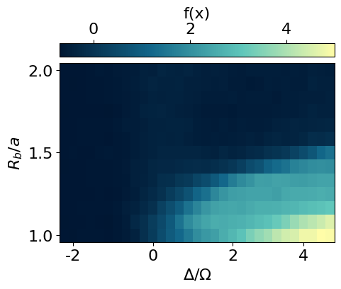
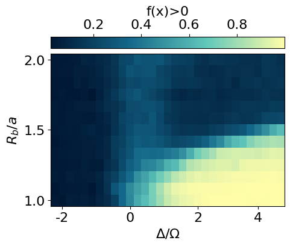
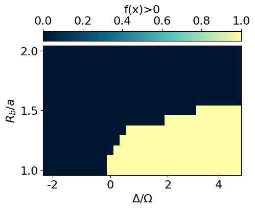
[ColabKernelApp] WARNING | Error caught during object inspection: Can't clean for JSON: <class 'sympy.core.symbol.Symbol'>Using our prior knowledge of the system, we can construct an order parameter by using the found correlator on the corner and subtracting the correlations on the edges and in the bulk.
def compute_correlation_bulk_pos(x):
"""Computes the bulk correlation of a single configuration."""
c = []
for i in range(N):
if i>L and i<(L*L-L) and i%L!=0 and (i+1)%L!=0:
yi = i//L
xi = (yi%2==0)*(i%L) + (yi%2==1)*(L-1-i%L)
j = i+1
c.append(x[i]*x[j])
return jnp.mean(jnp.array(c),axis=-1)/2
def compute_correlation_edges_pos(x):
"""Computes the edge correlation of a single configuration."""
c = []
for i in range(L-1):
c.append(x[i]*x[i+1])
for i in range(L*L-L,L*L-1):
c.append(x[i]*x[i+1])
for i in range(L-1,L*L,L):
c.append(x[i]*x[i+1])
for i in range(0,L*L,L):
c.append(x[i]*x[i+25])
return jnp.mean(jnp.array(c),axis=-1)
def compute_correlation_corner(x):
"""Computes the corner correlation of a single configuration."""
c = []
all_corners = [[0,1,25,24], [12,13,11,14], [156,155,157,154], [168,167,143,144]]
x_corner = jnp.concatenate([x[None, corners] for corners in all_corners], axis=0)
c.append(x_corner[:,0]*x_corner[:,3])
c.append(2*x_corner[:,1]*x_corner[:,2])
co = jnp.abs(jnp.mean(jnp.array(c).reshape(-1),axis=-1))
ed = jnp.abs(compute_correlation_edges_pos(x))
bu = jnp.abs(compute_correlation_bulk_pos(x))
return co - ed - bu
compute_correlation_corner_vmap = jax.vmap(jax.vmap(jax.vmap(compute_correlation_corner)))
plt.rcParams['font.size'] = 18
plt.figure(figsize=(3,3),dpi=200)
#S = data_exact['S']
cor = jnp.mean(compute_correlation_corner_vmap(snapshots*2-1), axis=-1)
plt.imshow(jnp.flipud(cor), cmap=cmap_green3, aspect='auto')
cbar = plt.colorbar(orientation="horizontal", pad=0.03, location="top")
cbar.set_label(r'f(x)', fontsize=20, labelpad=10)
plt.xlabel(r'$\Delta/\Omega$')
plt.ylabel(r'$R_b/a$')
x_tick_positions = [1, 10, 19, 27] # Positions for the ticks
x_tick_labels = ['-2', '0', '2', '4'] # Labels for the ticks
plt.xticks(x_tick_positions, x_tick_labels)
y_tick_positions = [0,6,12] # Positions for the ticks
y_tick_labels = ['2.0', '1.5', '1.0'] # Labels for the ticks
plt.yticks(y_tick_positions, y_tick_labels)
#cbar.set_label(r'$\langle Z(r_j)Z(r_i) \rangle$ $(r_j,r_i)\in NN$')
#plt.title('S')
plt.show()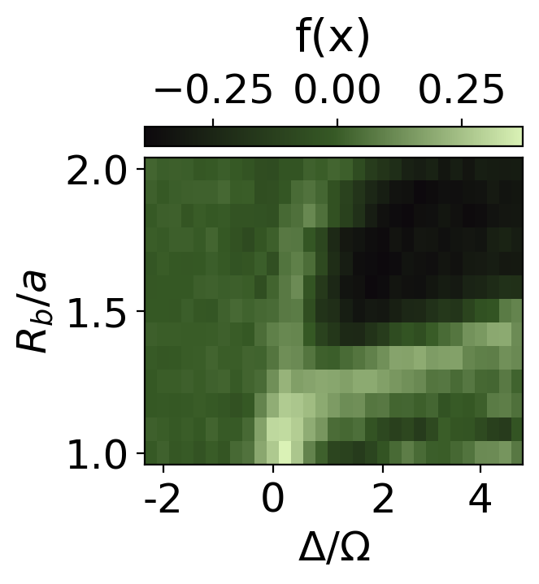
plt.rcParams['font.size'] = 18
plt.figure(figsize=(3,3),dpi=200)
plt.imshow(jnp.flipud(cor>0.2), cmap=cmap_green3, aspect='auto')
cbar = plt.colorbar(orientation="horizontal", pad=0.03, location="top")
cbar.set_label(r'f(x)', fontsize=20, labelpad=10)
plt.xlabel(r'$\Delta/\Omega$')
plt.ylabel(r'$R_b/a$')
x_tick_positions = [1, 10, 19, 27] # Positions for the ticks
x_tick_labels = ['-2', '0', '2', '4'] # Labels for the ticks
plt.xticks(x_tick_positions, x_tick_labels)
y_tick_positions = [0,6,12] # Positions for the ticks
y_tick_labels = ['2.0', '1.5', '1.0'] # Labels for the ticks
plt.yticks(y_tick_positions, y_tick_labels)
#cbar.set_label(r'$\langle Z(r_j)Z(r_i) \rangle$ $(r_j,r_i)\in NN$')
#plt.title('S')
plt.show()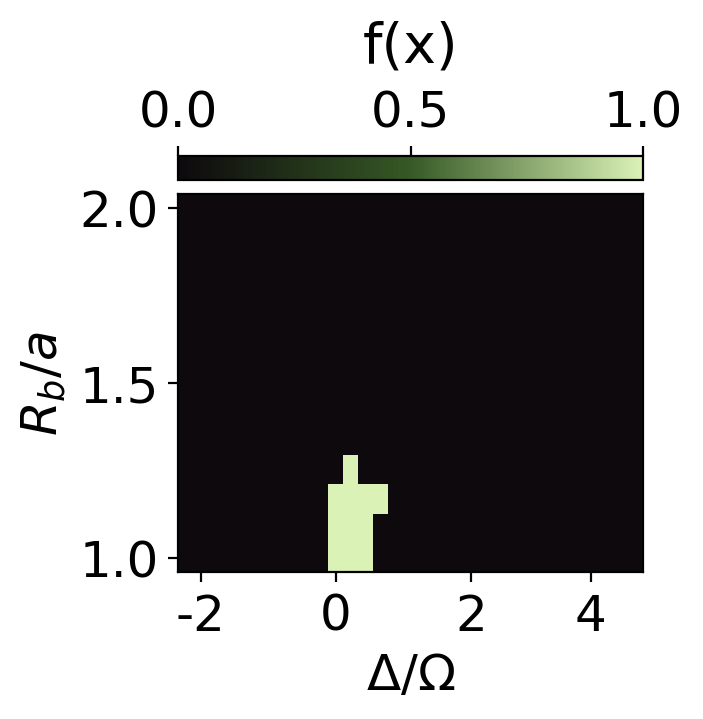